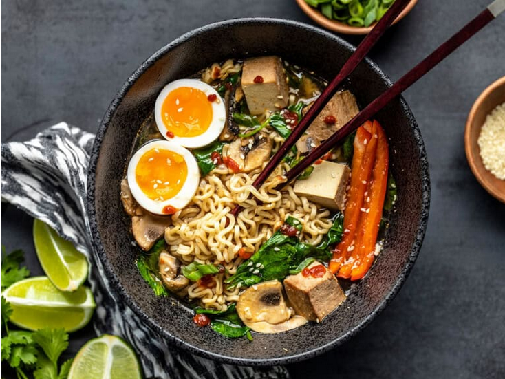

Ramen

Description
This is how to step up your ramen game!
Ingredients
- Cooking Oil
- Garlic
- Ginger
- Mushrooms
- Vegetable Broth
- Water
- Instant Ramen
- Fresh Spinach
- Egg
- Green Onion
- Siracha
Steps
- Add the oil, garlic, and ginger to a small sauce pot and sauté over medium for about one minute.
- Add the sliced mushrooms and sauté for about a minute more.
- Add the broth and water, and bring to a boil.
- Once boiling, add the uncooked ramen noodles. Boil for about 3 minutes, or just until they are tender. Do not overcook the noodles.
- Stir in the spinach until wilted. Turn the heat down to low, crack the egg into the broth, and let sit for about six minutes, or until the egg whites are cooked and the yolk is still runny.
- Transfer the soup to one or two bowls, then top with sriracha and sliced green onion.